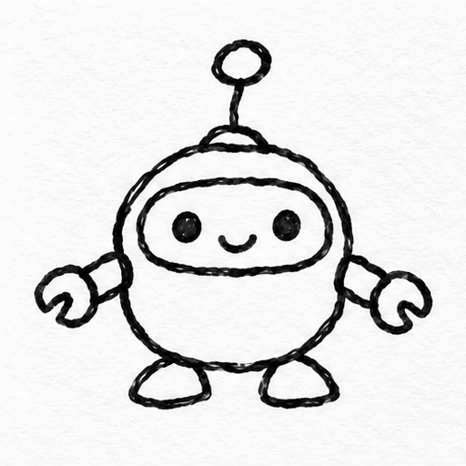

Author: Veevid Team · original source
GPT Image 2.6（文承认线稿本身也用2.6生成作替身）
原生 GIF 直链（已本地归档） · 页面模型依据 + GIF 多帧探测 · 未复测生成
License unknown. Local archive, not an author grant. MIT covers source code only.

Animate this sketch: the little robot waves one arm and its antenna bobs up and down. Keep the hand-drawn black ink lines and the plain white paper. Fixed camera, same character in every frame, seamless loop. No text, no borders.